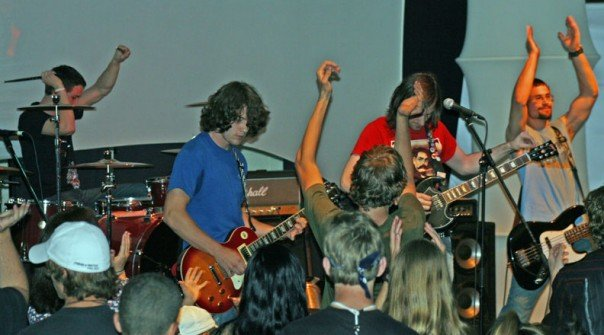
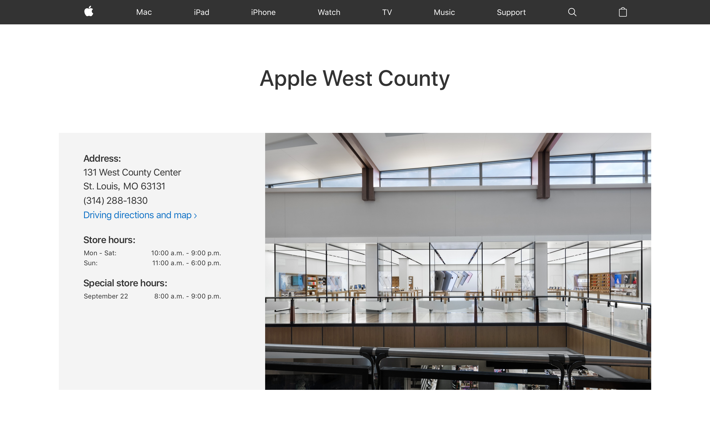
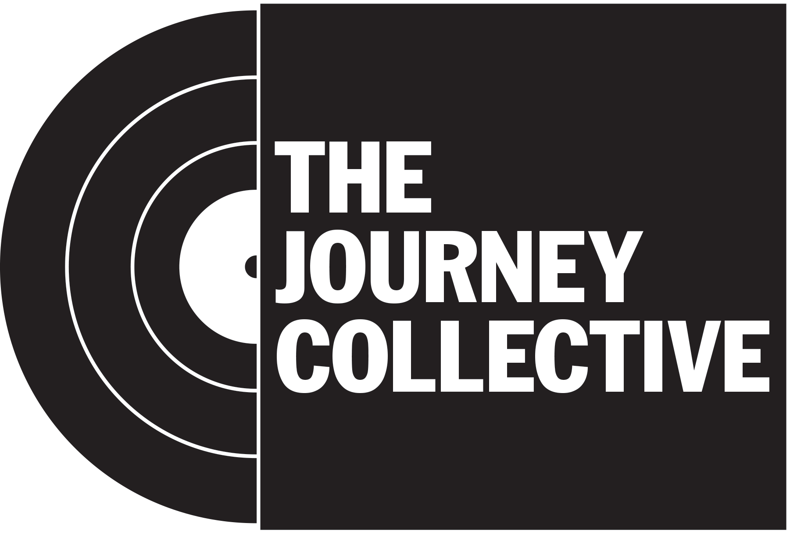

Foundations
Music has been a part of my life since I can remember. Specifically, I remember listening to my Dad play songs on his guitar and later singing Beatles and Eagles songs along with him. I remember listening to Paul Simon on the stereo in the living room with my mom. German nursery rhymes from my Grandma, Country Gospel songs from my Grandpa. I think it's no surprise that my own personal musical style has ended up in the ecclectic folk rock branch of Americana, with strong Country Western, 60's Phschedelic Pop, and Southern/Classic Rock influences.
Fifth grade introduced me to formal music instruction, and the saxophone. Christmas of sixth grade landed me my first guitar (apart from my Dad's acoustic that I was attempting to play nonstop.) Without formal guitar lessons, I applied the music theory I was learning in school to the guitar. Eventually I discovered tabs and got a couple of self-guided practice books for guitar. Next thing you know, I'm learning how to play Metal solos and now I'm the lead guitarist of your typical early 2000's alt rock high school band (so cool.)
Ah, but the glory was not long lived. Just as 99% of high school rock bands meet their dramatic end, so too did War-Town. And looking back, I'm not upset about it. Although I can look back and laugh now, there was some serious emotional pain involved in the band breakup, combined with quintessential high school romances gone amuck. My interest in audio production and recording grew quite a bit while in the band, thanks to some lucky connections with a local church with a small recording studio. That interest, combined with a scholarship, landed me at Webster University, in the Audio Production program.
Training
College for me was not all partying and fraternities. I grew and learned both in class and out, in three main areas that are all huge parts of my life now.
Audio
My coursework stretched me super far in the area of Audio Production. In addition, I started a few projects outside of class and took advantage of the free studio time. My junior year I recorded my first EP of original music. Huge step for me.
Music
As I mentioned, I recorded and released my first EP, "Prodigal," even coordinated an EP release party that was modestly attended. Small beginnings, but still big for me. Secondly, I took jazz guitar lessons. I had no idea how much this would grow me as a musician. Of course, I could've/should've practiced more, but my goal wasn't to be a jazz virtuoso, it was to expand my utility and knowledge of guitar, which happened. Many of the chord shapes and licks I learned in those lessons show up in my music still.
Tech
My macbookpro crashed senior year. Just the hard drive. Apple said they'd replace it for a few hundred dollars, which I did not have, so I sought out alternative options on the internet. Luckily at that time, macbook pro's still used spinning hard disk drives (not the solid state drives soldered to the motherboard of today.) Through online tutorials I essentially tought myself how to disassemlbe my computer, by the right type of hard drive, install it, install the operating system, and re-image it. My curiosity only increased after that. I found myself volunteering to fix computers at work and for friends, both hardware and software.
Long story short, my tech experience landed me a job at Apple Retail, which landed me a job doing IT for The Journey church, where I am currently, which launched my interest into software development, which is why I'm creating this site from scratch for the LaunchCode 101 course.
Jobs
I've already mentioned a few of the jobs I've had in Music & Technology, but let's elaborate a little here on the timeline and some of the skills used at each.
Shock City Studios - Studio Technician

Shock City Studios is the premier recording studio in St. Louis. I landed a job as the studio tech after an internship. Basically, I started fixing a bunch of stuff, including computers, microphones, and even some channels on the main SSL recording console. My time here was super fun, problem solving with other interns and staff, and even installing the console in the B Room today.
Apple - Sales Specialist
As you'd expect, I learned a lot about Macs from my time in Apple Retail. It's amazing how many little shortcuts and tricks most of us are unware of on our computers. One of the main things we were encouraged to do (other than sell computers and stuff) was to actually help people learn how to use their computers more efficiently, which has helped with my computer usage and navigation to this day.
The Journey - IT Specialist

I was helping out with music and audio on the weekends at my church, so it wasn't thatsurprising when the Tech Director called me and offered me a job helping setup and maintain their fleet of macs and other general IT troubleshooting. But it was kind of surprising because I wasn't looking for a job (I was working at the studio at the time.) Nevertheless, it turned out to be a great opportunity and evolved from a very part time gig to now my full time job.
The Journey - Worship Leader
While not officially on the pay roll as a Worship Leader, I've enjoyed filling in as the "Unofficial Sub" for the Journey Worship Leaders, giving them a weekend off here and there when they need the rest.
Creations
Websites
Music
What's Next?
The big question for me is where to next? More music, or more tech? I'm taking this LC101 class preparing myself for a career in development, but I simultaneously have an application pending for a worship leader position (official). The way I see it is if I get the worship leader gig, great, I'll continue in that path, but if I don't get it, then I'll be ready to apply for jobs at the end of this class, and I'll have some projects in my portfolio!
Whatever happens career-wise, I know both music & technology will be apart of my life right up to the end. They're both things that seem to have found me, rather than the other way around. Here's to the future, with all the problems to be solved and projects to be created both musically and technologically!